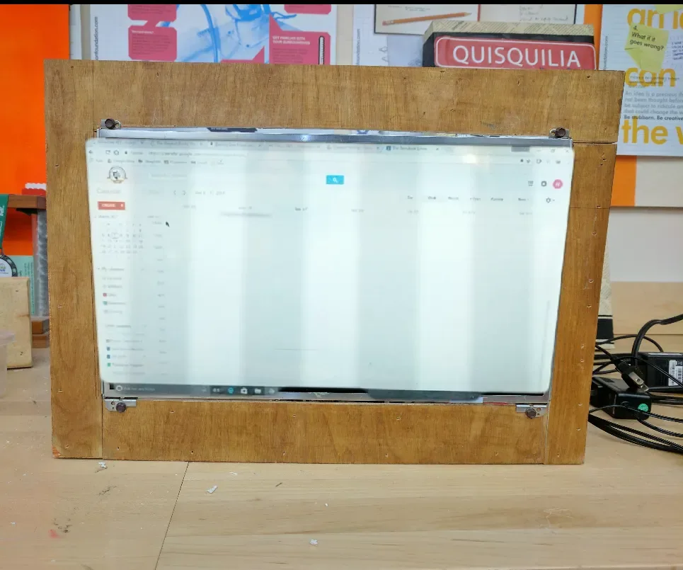

Showing records 61–120; filtering loads all pages in this category.

The goal is to configure Tasmota for BAZZ 6 in. CCT Recessed Fixture (SLDSK6TNWWF) so its switch, light, plug or sensor can be controlled locally through the web UI, MQTT or a home-automation system.

The goal is clear: use an ESPHome configuration for ble itag, reduce dependence on the vendor cloud and connect it to a local system such as Home Assistant.

The goal is to configure Tasmota for BlitzWolf Air Fryer (BW-AF1) so its switch, light, plug or sensor can be controlled locally through the web UI, MQTT or a home-automation system.

The goal is to configure Tasmota for BlitzWolf BW-SHP10-P (POA6204582) so its switch, light, plug or sensor can be controlled locally through the web UI, MQTT or a home-automation system.

The goal is to configure Tasmota for Boxlood 9W 900lm so its switch, light, plug or sensor can be controlled locally through the web UI, MQTT or a home-automation system.

The goal is to configure Tasmota for BrilliantSmart 20698 9W 800lm (20698/05) so its switch, light, plug or sensor can be controlled locally through the web UI, MQTT or a home-automation system.

The goal is to configure Tasmota for BSD01 so its switch, light, plug or sensor can be controlled locally through the web UI, MQTT or a home-automation system.

The goal is to configure Tasmota for BSD29 so its switch, light, plug or sensor can be controlled locally through the web UI, MQTT or a home-automation system.

The author uses a salvaged laptop LCD, matching controller and Raspberry Pi for a wall-mounted Google Calendar that follows phone updates.

The goal is to configure Tasmota for Calex Powerplug UK (900011) so its switch, light, plug or sensor can be controlled locally through the web UI, MQTT or a home-automation system.

The goal is to configure Tasmota for CloudFree EU (P1EU) so its switch, light, plug or sensor can be controlled locally through the web UI, MQTT or a home-automation system.

The goal is to configure Tasmota for Connect SmartHome CSH-FSTN12 so its switch, light, plug or sensor can be controlled locally through the web UI, MQTT or a home-automation system.

The goal is to configure Tasmota for Crest Smart Home Single Power Adaptor with 2 USB (SHSPM1USB) so its switch, light, plug or sensor can be controlled locally through the web UI, MQTT or a home-automation system.

The goal is to configure Tasmota for Deltaco 3m RGBCCT (SH-LS3M) so its switch, light, plug or sensor can be controlled locally through the web UI, MQTT or a home-automation system.

The goal is to configure Tasmota for Deta 18W 1900lm T8 Tube (DET018HA) so its switch, light, plug or sensor can be controlled locally through the web UI, MQTT or a home-automation system.

The goal is to configure Tasmota for DILISENS SP201 so its switch, light, plug or sensor can be controlled locally through the web UI, MQTT or a home-automation system.

The goal is to configure Tasmota for DS18B20 ESP01 DIY (ESP-01-01S-DS18B20-v1.0) so its switch, light, plug or sensor can be controlled locally through the web UI, MQTT or a home-automation system.

The goal is to configure Tasmota for Eachen IR DC6 so its switch, light, plug or sensor can be controlled locally through the web UI, MQTT or a home-automation system.

The goal is to configure Tasmota for EFUN SH331W so its switch, light, plug or sensor can be controlled locally through the web UI, MQTT or a home-automation system.

The goal is to configure Tasmota for Emax IP44 (95-01485) so its switch, light, plug or sensor can be controlled locally through the web UI, MQTT or a home-automation system.

The goal is to configure Tasmota for Energizer 2AC Weather Resistant (EOX3-1001-BLK) so its switch, light, plug or sensor can be controlled locally through the web UI, MQTT or a home-automation system.

The goal is to configure Tasmota for ESP-12F 5V/7-28V 4 Channel 30A (ESP12F_Relay_30A X4) so its switch, light, plug or sensor can be controlled locally through the web UI, MQTT or a home-automation system.

Evaluate replacing stock firmware on existing ESP8266 home devices

The goal is to configure Tasmota for Etersky WF-CS01 so its switch, light, plug or sensor can be controlled locally through the web UI, MQTT or a home-automation system.

The goal is to configure Tasmota for Feit Electric Chandelier Flame Tip Soft White (CFC40/927CA/FIL/AG) so its switch, light, plug or sensor can be controlled locally through the web UI, MQTT or a home-automation system.

The goal is to configure Tasmota for FrankEver Mini (FK-PW801US) so its switch, light, plug or sensor can be controlled locally through the web UI, MQTT or a home-automation system.

The goal is clear: use an ESPHome configuration for geekmagic ultra, reduce dependence on the vendor cloud and connect it to a local system such as Home Assistant.

The goal is to configure Tasmota for Geekome Enchufe Inteligente Chile (PG01-CL10A_T) so its switch, light, plug or sensor can be controlled locally through the web UI, MQTT or a home-automation system.

The goal is to configure Tasmota for Generic GU10 5W 460lm so its switch, light, plug or sensor can be controlled locally through the web UI, MQTT or a home-automation system.

The goal is to configure Tasmota for Globe 2 Outlet (50020) so its switch, light, plug or sensor can be controlled locally through the web UI, MQTT or a home-automation system.

The goal is to configure Tasmota for Gosund P2 (2APUZ-P2) so its switch, light, plug or sensor can be controlled locally through the web UI, MQTT or a home-automation system.

The goal is to configure Tasmota for Gosund USB Charger (WO2) so its switch, light, plug or sensor can be controlled locally through the web UI, MQTT or a home-automation system.

The goal is to configure Tasmota for GSP1311 Series (2AON6-GSP1311) so its switch, light, plug or sensor can be controlled locally through the web UI, MQTT or a home-automation system.

The goal is to configure Tasmota for Hama 806lm (00176550) so its switch, light, plug or sensor can be controlled locally through the web UI, MQTT or a home-automation system.

The goal is to configure Tasmota for Helloify BR30 9W 600lm (HTHC905) so its switch, light, plug or sensor can be controlled locally through the web UI, MQTT or a home-automation system.

The goal is to configure Tasmota for HIPER IoT IR2 (HI-IR2) so its switch, light, plug or sensor can be controlled locally through the web UI, MQTT or a home-automation system.

Evaluate a local HomeKit path for existing ESP home devices

The goal is to configure Tasmota for HomeMate 10m RGB (HMRGB5M) so its switch, light, plug or sensor can be controlled locally through the web UI, MQTT or a home-automation system.

The goal is to configure Tasmota for Hyperikon 14W 1000lm 6 (HyperSmart-DL6) so its switch, light, plug or sensor can be controlled locally through the web UI, MQTT or a home-automation system.

The goal is to configure Tasmota for IoTextra Input - Isolated 8 channel Digital Input Module (040101302110) so its switch, light, plug or sensor can be controlled locally through the web UI, MQTT or a home-automation system.

The goal is to configure Tasmota for Jeeo TF-SH330 so its switch, light, plug or sensor can be controlled locally through the web UI, MQTT or a home-automation system.

The goal is to configure Tasmota for Jula Anslut (026174) so its switch, light, plug or sensor can be controlled locally through the web UI, MQTT or a home-automation system.

The goal is to configure Tasmota for Kesen KS-604S so its switch, light, plug or sensor can be controlled locally through the web UI, MQTT or a home-automation system.

The goal is to configure Tasmota for Kogan 4.1kW Portable Air Conditioner (Reverse Cycle) (KAPRA14WFGA) so its switch, light, plug or sensor can be controlled locally through the web UI, MQTT or a home-automation system.

The goal is to configure Tasmota for Kohree 600lm so its switch, light, plug or sensor can be controlled locally through the web UI, MQTT or a home-automation system.

The goal is to configure Tasmota for Kuled 800lm so its switch, light, plug or sensor can be controlled locally through the web UI, MQTT or a home-automation system.

The goal is clear: use an ESPHome configuration for kws303l, reduce dependence on the vendor cloud and connect it to a local system such as Home Assistant.

The goal is to configure Tasmota for LE lampUX A19 9.5W 806lm (901003-US) so its switch, light, plug or sensor can be controlled locally through the web UI, MQTT or a home-automation system.

The goal is to configure Tasmota for Ledvance Smart+ Compact (4058075570979) so its switch, light, plug or sensor can be controlled locally through the web UI, MQTT or a home-automation system.
 Fallback
FallbackThe goal is clear: use an ESPHome configuration for LEDVANCE SMART+ TABLE FRAME MULTICOLOR, reduce dependence on the vendor cloud and connect it to a local system such as Home Assistant.

The goal is to configure Tasmota for Lerlink 3 Gang (X803A) so its switch, light, plug or sensor can be controlled locally through the web UI, MQTT or a home-automation system.
FallbackThe goal is clear: use an ESPHome configuration for Levoit Core 400s, reduce dependence on the vendor cloud and connect it to a local system such as Home Assistant.
FallbackEvaluate a toolchain for building open firmware for existing low-cost IoT modules

The goal is clear: use an ESPHome configuration for LinkNode R4, reduce dependence on the vendor cloud and connect it to a local system such as Home Assistant.

The goal is to configure Tasmota for LogiLink (PA0199) so its switch, light, plug or sensor can be controlled locally through the web UI, MQTT or a home-automation system.

The goal is to configure Tasmota for Lohas ZN041 BR30 12W 1080lm (LH-ZN041-E27-RGB-1) so its switch, light, plug or sensor can be controlled locally through the web UI, MQTT or a home-automation system.
FallbackThe goal is clear: use an ESPHome configuration for Lonsonho 9W E27 RGBWW Bulb, reduce dependence on the vendor cloud and connect it to a local system such as Home Assistant.

The goal is to configure Tasmota for LoraTap SP400W-IT so its switch, light, plug or sensor can be controlled locally through the web UI, MQTT or a home-automation system.

The goal is to configure Tasmota for LSC Filament G125 so its switch, light, plug or sensor can be controlled locally through the web UI, MQTT or a home-automation system.

The goal is clear: use an ESPHome configuration for LSC Smart Connect 1500lm 22W Ceiling Lamp, reduce dependence on the vendor cloud and connect it to a local system such as Home Assistant.